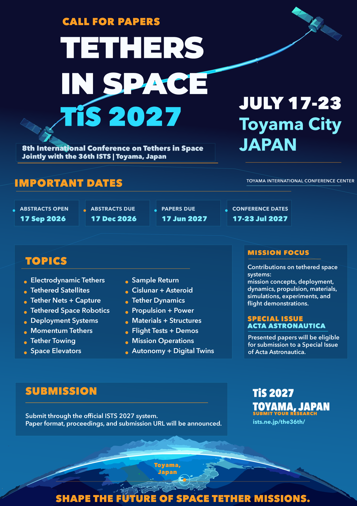

Conference Flyer
Share the TiS 2027 call for papers with colleagues and on bulletin boards.

Click to open full size
Conference Blurb
The 8th International Conference on Tethers in Space (TiS 2027) will be held jointly with ISTS 2027, July 17–23, 2027, in Toyama, Japan. Original contributions are invited on tethered satellites, electrodynamic and momentum-exchange tethers, tether nets, deployment mechanisms, space elevators, tether dynamics and control, propulsion and power, mission design, autonomy, simulations, experiments, and flight demonstrations.
Dates: July 17–23, 2027
Venue: Toyama International Conference Center, Toyama, Japan
Co-located with: 36th ISTS (ISTS 2027)
Additional media files and a high-resolution poster will be posted here when available.
Previous Edition — TiS 2024
The 7th International Conference on Tethers in Space was held June 2–5, 2024, at York University, Toronto, Canada, chaired by Prof. George Z.H. Zhu.
TiS 2024 — 7th Conference
Chaired by Prof. George Z.H. Zhu (York University), TiS 2024 brought the global tether research community together for four days of technical sessions in Toronto, Canada.
Visit TiS 2024 website →TiS 2024 Papers
Proceedings and accepted papers from TiS 2024 are available on the conference website. Selected papers were published in a Special Issue of Acta Astronautica (Elsevier).
Browse TiS 2024 papers →